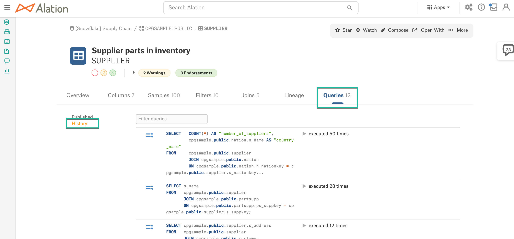

Enable Table Privacy¶
Customer Managed Applies to customer-managed instances of Alation
Applies from release 2020.4
The Table Privacy feature is disabled by default and can be activated by a Server Admin with Alation shell access using the alation_conf command and the parameter alation.granular_object_privacy.enabled.
Default: False (feature disabled).
Set to True to enable.
When the alation.granular_object_privacy.enabled parameter is set to True, the Settings page is available for every Table object in the Catalog.
To set a new value,
SSH to the Alation server.
Enter the Alation shell:
sudo /etc/init.d/alation shell
To see the current value:
alation_conf alation.granular_object_privacy.enabledTo set a value:
alation_conf alation.granular_object_privacy.enabled -s True
Restart web:
alation_supervisor restart web:*
Other Relevant Parameters¶
You can additionally set a number of other parameters when you enable the Table Privacy feature.
Hide Ingested Queries¶
alation.privacy.hide_statement_templates: hides ingested query data from Alation.
Ingested queries during QLI and queries ingested from Compose produce Statement Template objects displayed on the History page under the Queries tab on the catalog page of a Schema and Table objects. Table privacy is not enforced for Statement Templates, and they may expose Private table names if object permissions for a user are not aligned. Setting this parameter to True hides the History link from the Queries tab of the Schema and Table Catalog page making the ingested query data unavailable to users.
Note that the parameter applies to all data sources and all table objects.

Unpublished Query Visibility¶
Applies to releases 2020.4 to 2022.4
Note
Starting in 2023.1, the visibility of unpublished queries behaves differently. See Unpublished Query Access for more information.
Parameter alation.catalog.unpublished_query_visibility_level works for unpublished queries created in Compose. By default, Alation users can see both published and unpublished queries:
Published queries on Public data sources
Unpublished queries on Public data sources
Published queries on Private data sources that they have access to as Viewers or Data Source Admins
Unpublished queries on Private data sources that they have access to as Viewers or Data Source Admins that were shared for them by query owners.
If an unpublished query uses a Private table in a Public data source, this unpublished query may expose Private table information.
You can use this parameter to more rigidly control the visibility of unpublished queries in Alation.
alation.catalog.unpublished_query_visibility_level
The
alation.catalog.unpublished_query_visibility_levelparameter accepts values:
visible: unpublished queries on Public data sources are visible (default)
not_visible: unpublished queries on Public data sources are hidden
per_ds: allows to specify data sources for which to hide the unpublished queries. Requires the parameter alation.catalog.unpublished_query_visible_ds_ids_csv to be set too.After editing this parameter, rebuild the search index.
alation.catalog.unpublished_query_visible_ds_ids_csv
The parameter
alation.catalog.unpublished_query_visible_ds_ids_csvis dependent on the parameteralation.catalog.unpublished_query_visibility_level. It only needs to be set ifalation.catalog.unpublished_query_visibility_level = per_ds.As the value, accepts a comma-separated list of data source IDs.
Default: not set
After editing this parameter, rebuild the search index.
Note
If you set both the parameters at one time:
alation.catalog.unpublished_query_visibility_level
alation.catalog.unpublished_query_visible_ds_ids_csv
then the search index only needs to be rebuilt once after you have set both the required values.
To set the parameter values,
SSH to the Alation server.
Enter the Alation shell:
sudo /etc/init.d/alation shell
To see the current value:
alation_conf alation.catalog.unpublished_query_visibility_levelTo set new values:
alation_conf <parameter name> -s <value>
Example:
alation_conf alation.catalog.unpublished_query_visible_ds_ids_csv -s 456,45,1
Rebuild the search index:
alation_action rebuild_es_index
Note
This command kicks off the rebuild_index task. The rebuild_index task completion time depends on the Rosemeta size and may take hours on large instances. You can monitor the task status in Admin Settings > Monitor > Active Tasks.
Other Considerations Relevant to Table Privacy¶
The Lineage diagram, the Filters tab, and the Joins tabs do not filter out Private table objects in 2020.4.
Compose does not stop users from executing queries on tables the users do not have access to in the Catalog if they have permissions to access these tables on the database. It is recommended to make sure that the DB permissions on table objects are aligned with the Catalog table access permissions.
It is recommended that users should not publish or share Compose queries that use Private tables.